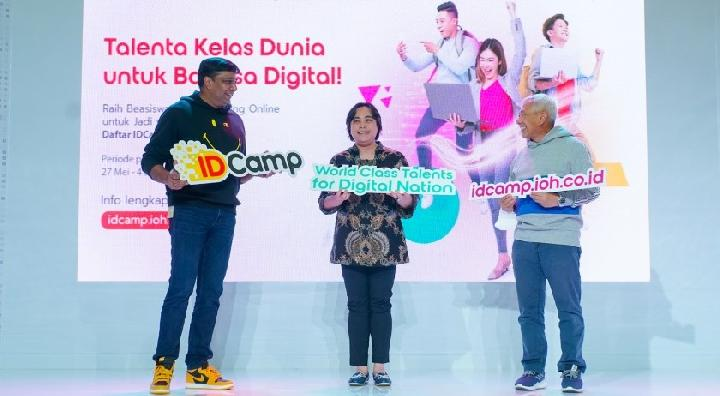
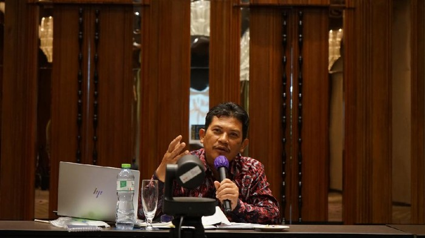
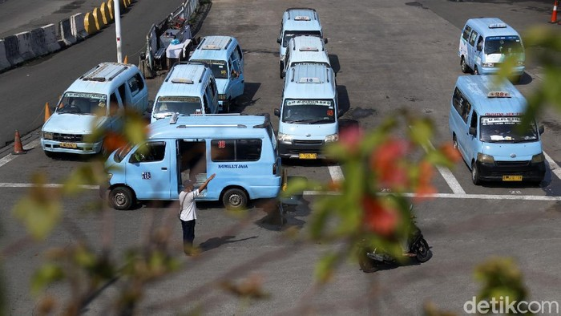
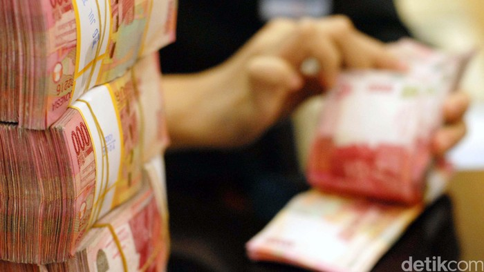
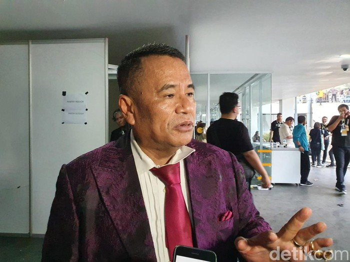

Real Madrid keluar sebagai juara Liga Champions 2021-2022 usai mengalahkan Liverpool 1-0 pada laga final yang digelar di Stade de France, Saint-Denis, Perancis, Minggu (29/5/2022) dini hari WIB. Pahlawan kemenangan Los Blancos pada duel final Liga Champions Liverpool vs Real Madrid adalah Vinicius Junior. Pemain sayap berkebangsaan Brasil itu mencetak satu-satunya gol Real Madrid pada menit ke-59. Dengan kesuksesan ini, Real Madrid semakin mengukuhkan status mereka sebagai klub tersukses di Liga Champions. El Real kini memiliki 14 trofi Si Kuping Besar di lemari mereka. Sebelumnya, Real Madrid pernah juara Liga Champions pada edisi 1956, 1957, 1958, 1959, 1960, 1966, 1998, 2000, 2002, 2014, 2016, 2017, 2018. Di sisi lain, bagi Liverpool, kekahalan ini membuat mereka gagal membalaskan dendam mereka atas Real Madrid pada final Liga Champions 2018.
Artikel ini telah tayang di Kompas.com dengan judul "Hasil Liverpool Vs Real Madrid: Menang 1-0, Los Blancos Juara Liga Champions 2022!", Klik untuk baca: https://bola.kompas.com/read/2022/05/29/04340268/hasil-liverpool-vs-real-madrid-menang-1-0-los-blancos-juara-liga-champions-2022?page=all.
Penulis : Faishal Raihan
Editor : Faishal Raihan
detakNews

ID Camp
Indosat Ooredoo Hutchison meluncurkan IDCamp 2022 untuk menyiapkan masyarakat Indonesia menjadi talenta digital berkelas dunia dan mendukung terciptanya bangsa digital. Tahun ini IDCamp menargetkan lebih banyak penerima manfaat beasiswa coding online, yaitu sebanyak 55 ribu peserta.
Pada acara ini juga dilangsungkan wisuda bagi peserta IDCamp 2021 yang diwakili oleh sepuluh lulusan terbaik. Tahun lalu program ini telah berhasil mencatatkan 46.025 peserta beasiswa coding online, sehingga menghasilkan lebih dari 110 ribu total penerima manfaat sejak didirikan pada tahun 2019.
President Director and CEO Indosat Ooredoo Hutchison, Vikram Sinha, mengatakan Indosat Ooredoo Hutchison melihat IDCamp sebagai sarana untuk memberdayakan talenta digital masa depan. Salah satu program CSR di pilar pendidikan digital ini juga bertujuan untuk mengatasi kekurangan talenta digital bersertifikat global di Indonesia.
Dicoding
Visi dicoding adalah menjadi platform edukasi teknologi terdepan yang mendorong akses literasi digital yang lebih luas untuk semua. Dicoding memiliki misi untuk mengakselerasi transisi Indonesia menuju dunia digital melalui pendidikan teknologi yang mentransformasi kehidupan.
Kini semua bangsa bergerak menuju dunia digital yang bertumpu pada inovasi teknologi di semua sendi kehidupan. Kami yakin pendidikan teknologi adalah fondasi bagi setiap bangsa agar menjadi yang terdepan dalam menghadapi dunia digital.
Dicoding hadir sebagai platform pendidikan teknologi yang membantu menghasilkan talenta digital berstandar global. Semua demi mengakselerasi Indonesia agar menjadi yang terdepan.
detakFinance

BPJS
BPJS Kesehatan buka suara soal isu pengenaan denda hingga Rp 30 juta kepada peserta yang menunggak bayar iuran. Hal itu sempat viral di media sosial beberapa waktu lalu.
Direktur Utama BPJS Kesehatan Ali Ghufron Mukti mengatakan pengenaan denda Rp 30 juta merupakan batas maksimal yang akan dibebankan ke peserta. Sejatinya denda hanya 5% dari total biaya layanan di rumah sakit sehingga tidak mungkin dendanya lebih besar dari biaya pelayanan.
"Jadi denda artinya 5% dari total biaya di rumah sakit, yang 2020-2021 itu hanya 2,5%. Jadi tidak mungkin itu lebih besar dari dana pelayanan,"

Proyekan
Anak usaha PT Bakrie & Brothers Tbk (BNBR), PT VKTR Teknologi Mobilitas (VKTR) meresmikan PENS - VKTR Innovation Lab of Transport Electrification. Direktur Utama PT VKTR Teknologi Mobilitas Gilarsi W. Setijono mengatakan proyek tersebut salah satunya adalah terkait pengembangan bus dan angkot berbahan bakar bensin menjadi listrik.
"Kerja sama antara VKTR dan PENS ini nantinya akan bermuara pada tiga hal: pengembangan komponen telematika dan mekatronika, repowering bus dan angkot dari mesin bensin menjadi listrik, dan pengembangan teknologi motor listrik,"
Goto
PT GoTo Gojek Tokopedia Tbk (GOTO) mencatat rugi periode berjalan pada kuartal I 2022 sebesar Rp 6,61 triliun. Angka itu meningkat dibanding periode yang sama tahun lalu Rp 1,95 triliun.
Hal itu berdasarkan laporan keuangan konsolidasian interm yang tidak diaudit seperti dikutip detikcom,

BANK
Jumlah kantor cabang bank terus berkurang setiap tahun. Berdasarkan data Statistik Perbankan Indonesia (SPI) periode Februari 2022 jumlah kantor bank sebanyak 28.350 unit dari 107 bank.
Untuk jumlah kantor ini menyusut 2.597 unit sejak 2019 yang mencapai 31.127 unit dari 110 bank. Kemudian pada 2020 jumlah kantor bank tercatat 30.733 unit dari 109 bank. Sedangkan pada 2021 jumlah kantor bank tercatat 29.999 unit dari 107 bank.
detakHot

Adik Gus Dur, KH Salahuddin Wahid atau yang dikenal sebagai Gus Sholah, meninggal dunia pada Februari 2022. Gus Sholah wafat di usia 77 tahun.
Pemakaman Gus Sholah kala itu dihadiri sejumlah sahabat, termasuk Hotman Paris, yang mengaku kenal dekat. Dalam unggahan terbarunya di Instagram, sang pengacara kondang memperlihatkan momen-momen pemakaman Gus Sholah yang dihadiri olehnya.
detakInet
Bakteri
Bakteri "hiper-resisten" yang mampu menghindari antibiotik umum, ditemukan di tanah Antartika. Sebuah studi menyebutkan, kemampuan bakteri super ini bisa menjadi ancaman bagi kesehatan manusia.
Meskipun ancaman itu tidak segera terjadi, para peneliti sudah memperingatkan potensi tersebut dapat menimbulkan risiko bagi kesehatan manusia secara global di masa depan, terutama jika Antartika terus terancam oleh krisis iklim dan kerusakan lingkungan.
Dalam sebuah makalah yang diterbitkan dalam jurnal Science of the Total Environment, para ilmuwan dari University of Chile menjelaskan bagaimana mereka mengumpulkan sampel tanah dari Semenanjung Antartika antara 2017 hingga 2019. Ketika mereka kembali ke lab, mereka terkejut menemukan keragaman mikroorganisme yang ditemukan hidup di dalam tanah yang keras ini.
Infinix
Infinix memperbarui laptop INBook X2 dengan RAM 8GB, alhasil bikin perangkat ini lebih bertenaga untuk multitasking. Namun yang menarik harganya masih Rp 5 jutaan.
Infinix INBook X2 mengusung body metal dengan ketebalan 14,8 mm dengan berat hanya 1,24 kg. Penampilannya cukup memikat dengan penerapan dua proses finishing pada bagian cover luar.
Selain itu Infinix memberikan tiga pilihan warna yang dapat mengekspresikan kepribadian dan gaya penggunanya. Ada warna grey, red dan green.